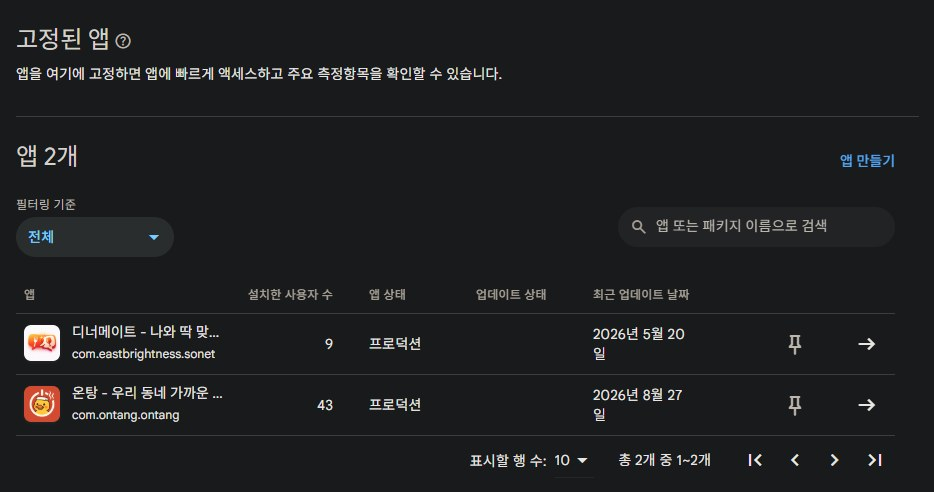
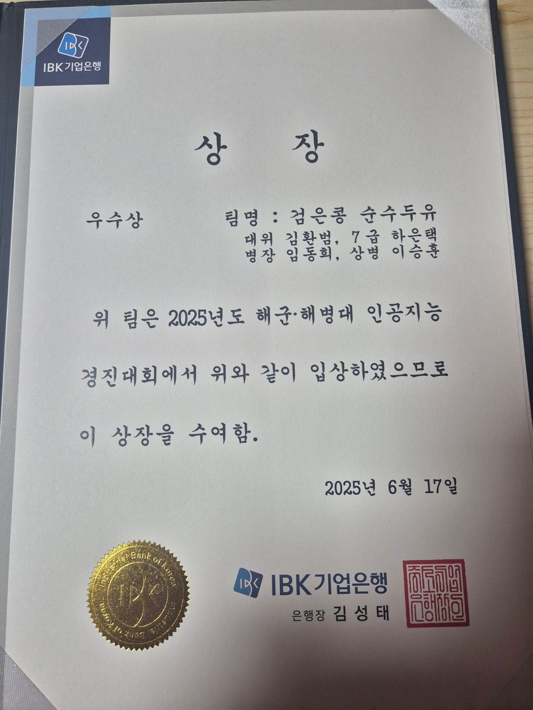
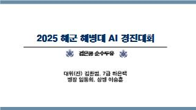

프로젝트 및 수행경험 자료
현재 운영 중인 앱과 AI 경진대회 수상 경험을 정리한 참고자료입니다.
1. 운영 중인 앱
Google Play Console에 등록해 프로덕션 상태로 운영하고 있는 앱 2개입니다.

| 온탕 | 우리 동네 가까운 … · com.ontang.ontang · 설치 사용자 43명 · 프로덕션 · 최근 업데이트 2026.08.27 |
|---|---|
| 디너메이트 | 나와 딱 맞… · com.eastbrightness.sonet · 설치 사용자 9명 · 프로덕션 · 최근 업데이트 2026.05.20 |
소스 저장소: github.com/EastBrightness
2. 2025 해군·해병대 인공지능 경진대회 우수상
| 대회 | 2025년도 해군·해병대 인공지능 경진대회 |
|---|---|
| 수상 | 우수상 (IBK기업은행 은행장 상장) |
| 팀명 | 검은콩 순수두유 |
| 수상일 | 2025년 6월 17일 |
| 과제 | AIS 항적 데이터 기반 의심선박 · 적선박 식별 알고리즘 개발 |

수상 관련 보도: 뉴스1 · ‘해군·해병대 사이버보안경진대회 및 인공지능경진대회’ 수상자 (2025.06.17)
3. 발표 자료

발표 내용 요약
- 의심선박 식별 — XGBoost 기본 모델로 val F1 0.99 / test F1 0.997. 이상행동 조건과 유사한 feature에 가중을 주는 방식(상관 기반 복제, 상위 5개 feature, 값 증폭)을 RandomForest로 비교 실험.
- 적선박 식별 — 선박별 항적을 이미지로 시각화해 분류해 봤으나 성능이 낮아 폐기. 이상 좌표·중복 제거, 시간순 정렬 후 이동거리, 경로 직선성, 속도·방향 변화, AIS 신호 불규칙성 등 파생변수를 생성.
- 모델 선정 — 1D Conv + LSTM/Transformer 시계열 모델 0.97, 부스팅 계열 0.98, 앙상블 0.99. Optimizer는 RAdam · AdamP · AdamW 비교.
제출자료 성격상 팀원 역할 등 자세한 내용은 위 발표 파일에 있습니다.